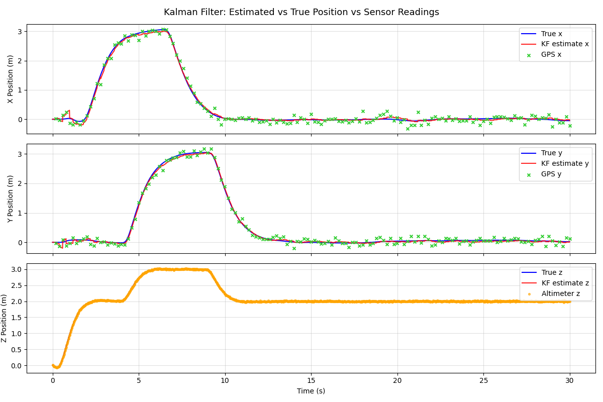
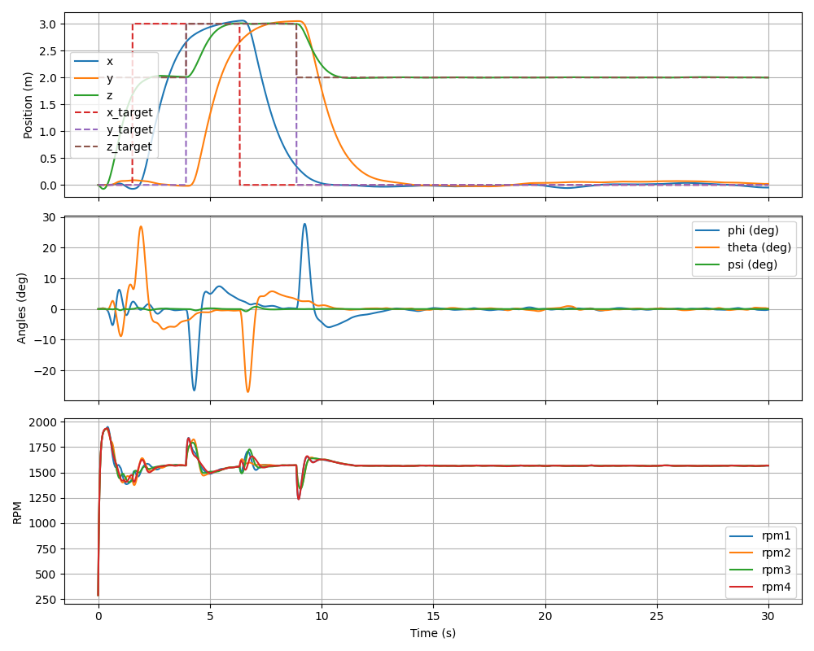

Project Icarus — Flight Simulations
Simulation work for Project Icarus, progressing from 1D PID altitude control to a full 6-DoF quadrotor simulation with Kalman filter state estimation and closed-loop trajectory tracking.
6-DoF Simulation with Kalman Filter State Estimation
Latest
6-DoF quadrotor simulation — Kalman-filtered state estimates drive closed-loop PID control through a sequence of step waypoints.
Key Highlights
- KF estimate converges to true position despite scattered GPS measurements.
- Closed-loop controller tracks step waypoints across X, Y, and Z simultaneously.
- Attitude remains stable through position transitions (<30° max tilt).
- All four motor RPMs converge to steady-state hover after each waypoint.
Stack
- Language: Python, NumPy, Matplotlib
- Dynamics: Nonlinear 6-DoF quadrotor model
- Estimator: 6-state Kalman filter (position + velocity)
- Attitude: Complementary filter on simulated IMU
- Control: Cascade PID — position loop + attitude loop

KF estimate (red) tracks true position (blue) closely despite scattered GPS readings (green ×). Altimeter data (orange) fuses with GPS for Z-axis estimation.

X/Y/Z position tracks step waypoints (dashed) with clean transient response. Euler angles settle to near-zero in hover. All four motor RPMs converge after each commanded waypoint.
1D Vertical Flight Simulation
Earlier WorkThe starting point for Icarus simulation — a 1D vertical flight model with PID altitude control, sensor noise, and low-pass filtering used to validate the control approach before extending to 6-DoF.


Key Highlights
- Modeled three-phase flight profile: ground → 10 m hover → soft landing.
- Simulated noisy thrust and RPM measurements to evaluate controller robustness.
- Applied low-pass filtering to reduce thrust oscillations under sensor noise.
Stack
- Language: Python, NumPy, Matplotlib
- Control: PID altitude control
- Modeling: 1D thrust dynamics, noisy sensor measurements
- Signal Processing: Low-pass filter on thrust commands